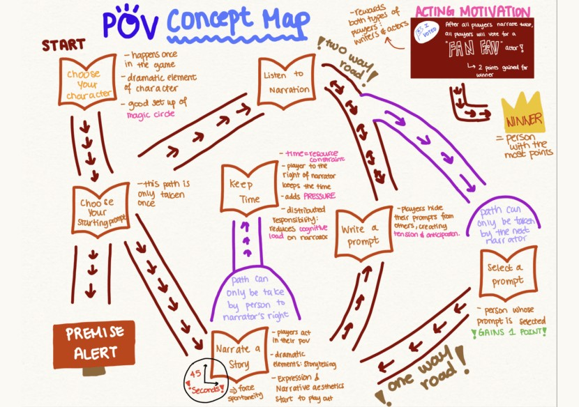
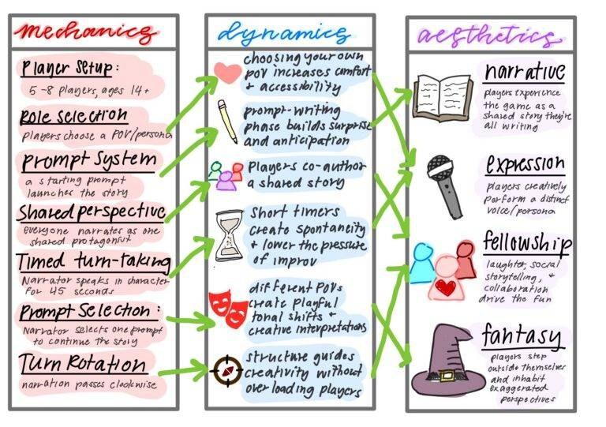

POV
overview
POV is a print-and-play party game where 5 to 8 players take on dramatic character roles to build one unscripted story together. I worked on a four-person design team to take the game from concept to prototype to public release, designing a fast, structured format that lets any group finish a full story in two rounds without prior gaming or improv experience.
problem
Existing storytelling games put an intimidating creative burden on players by asking them to invent stories from scratch, while deduction games like Mafia and Fibbage rely on high-stress deception and social exclusion. After running competitive teardowns of both categories, I saw a gap for a cooperative game that rewards creativity and roleplay while using structured prompts to ease social anxiety. Before prototyping, my team and I built a concept map and an MDA model to scope the MVP down to the core loop and the few mechanics that directly supported the experience we wanted players to have.


target users
I designed for casual party game players, families, and college students who want a funny, expressive activity but feel intimidated by complex tabletop systems like Dungeons & Dragons. Through user journey mapping, we found they love playing over-the-top personas but need game-enforced time limits and structured prompts to feel safe enough to improvise.
pain points
The first prototype was feature-heavy, and the usability playtests we ran revealed severe cognitive overload. Each turn, players juggled 5 tasks at once: acting out a secret character, hiding that identity, secretly weaving 3 plot quests into the story, tracking other players to guess their roles, and writing story continuations on a timer. I quickly learned that the complexity killed the humor and made players too cautious to take creative risks.